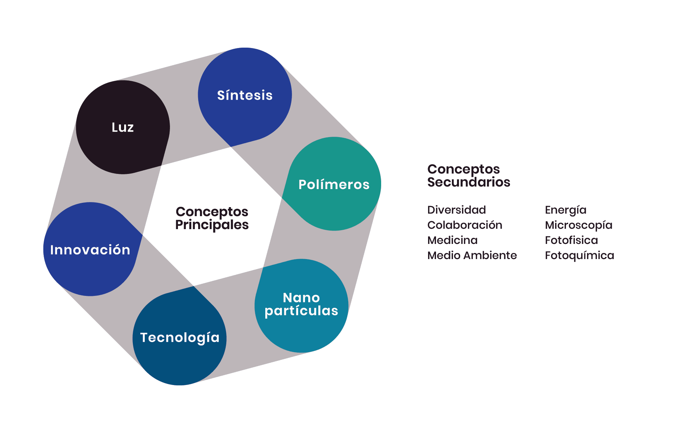
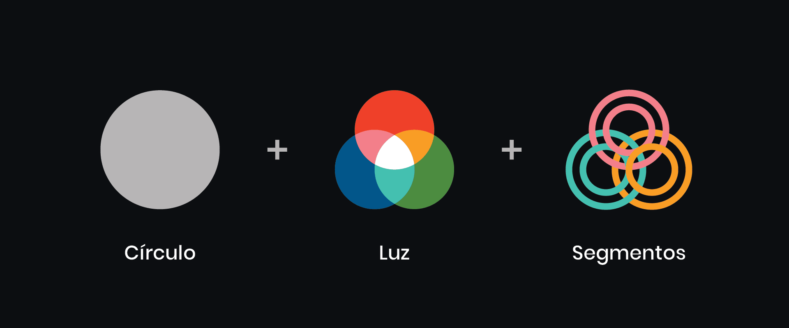
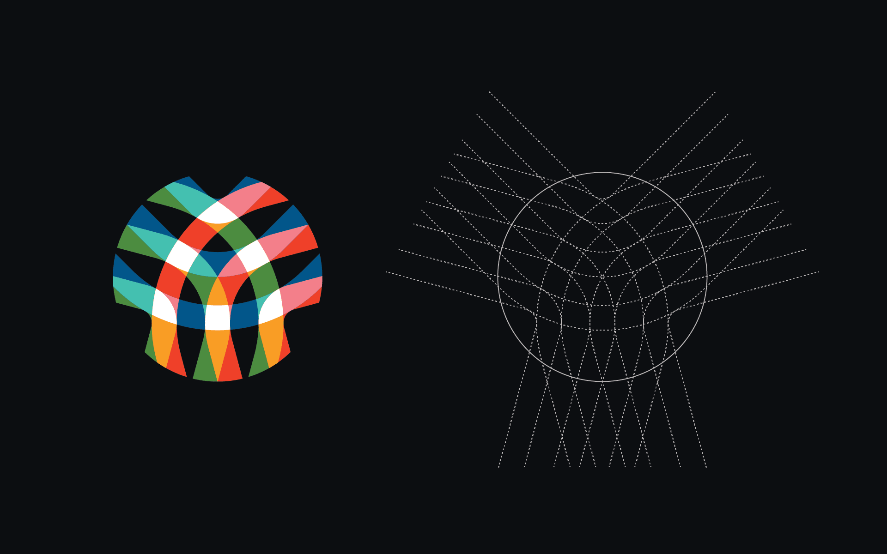
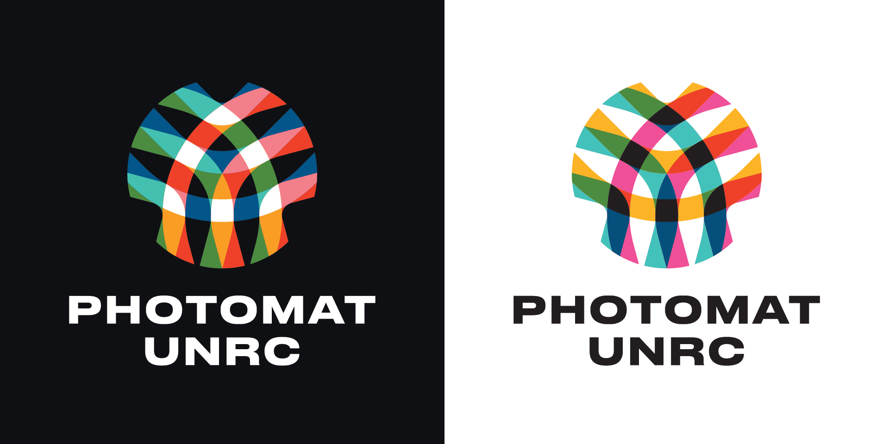
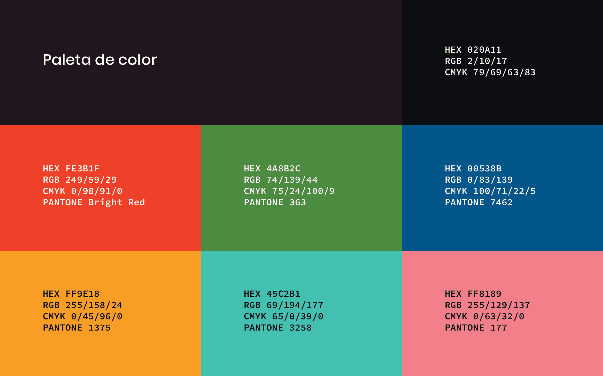
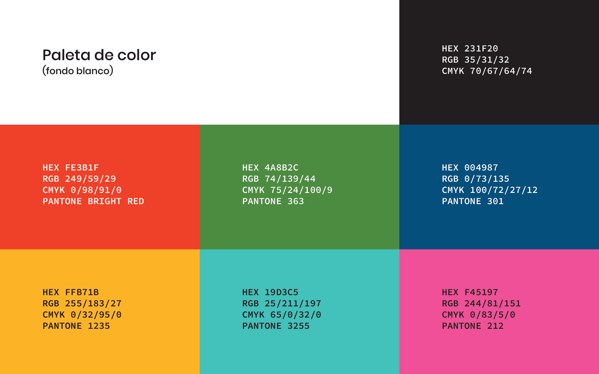
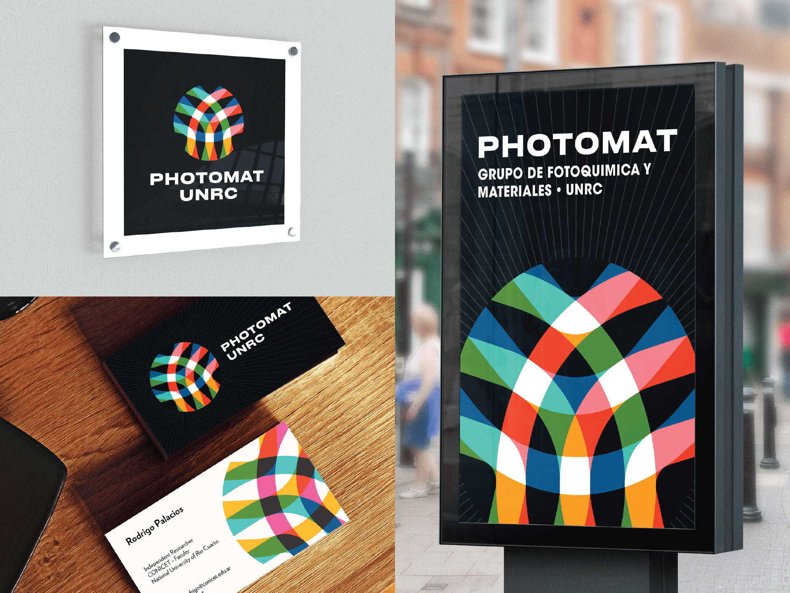

Para el desarrollo del diseño del logo nos basamos en los siguientes conceptos:
“PhotoMat es un grupo interdisciplinario de químicos, físicos y biólogos enfocados en la síntesis, estudio y aplicación de nuevos materiales—principalmente poliméricos y nanoestructurados—con gran potencial de aplicación en los campos de la nanomedicina, remediación ambiental y conversión energética.
“Para la síntesis, caracterización y aplicación de estos materiales se emplean frecuentemente herramientas fotofísicas y fotoquímicas, es decir, técnicas basadas en la luz.”
El objetivo fue la creación de un logo y diseño de identidad que nos represente e identifique. El logo debía ser moderno, memorable, y connotar tecnología avanzada. El diseño de la identidad visual debía estar guiado por los conceptos claves que caracterizan al trabajo del grupo: luz, síntesis, polímeros, nanopartículas.
Para la ideación del logo y el “brainstorming”, nos enfocamos en un núcleo de conceptos principales y una serie de conceptos secundarios que refuerzan el significado de los primeros.
Conceptos principales: luz, síntesis, polímeros, nanopartículas, tecnología, innovación.
Conceptos secundarios: diversidad, colaboración, medicina, medio ambiente, energía, microscopía, fotofísica, fotoquímica.


El concepto de luz está representado por los tres colores primarios que se combinan para formar los secundarios, lo cual a su vez nos remite a otros conceptos de la identidad visual, como la colaboración y la síntesis.
Las áreas resaltadas en blanco por la síntesis aditiva de colores remiten a partículas activadas por medio de la luz.
El círculo sugerido por el perímetro del logo representa una partícula, o un todo. Las formas circulares además sugieren movimiento, armonía, y sensación de integridad.
Las líneas concéntricas que se entrelazan entre sí representan cadenas poliméricas dentro de la nanopartícula. La superposición de formas y la mezcla aditiva de colores nos remiten al concepto de síntesis.
Antes de llegar al concepto final, llevamos a cabo una serie de exploraciones gráficas basadas en los conceptos centrales expuestos anteriormente.
El isotipo es la variante del logo que utiliza únicamente el ícono de la marca, prescindiendo de cualquier componente textual. Estas son las formas subyacentes que definen el aspecto final del logotipo.

Un imagotipo es la representación gráfica de la marca en la cual el ícono y el nombre forman una unidad visual.

Conseguimos dos paletas de colores vibrantes en base a los dos métodos por los cuales percibimos y reproducimos el color—color sustractivo y aditivo—a ser usadas en las variantes del logo sobre fondo oscuro o blanco, respectivamente.


Al finalizar del desarrollo de la marca concebimos una serie de aplicaciones prácticas para visualizar de qué manera la misma podría implementarse en distintos medios y situaciones de la vida real.

—
Diseño de logo e identidad visual a cargo de Sergio Chiavassa, @schiavassa en Twitter, Instagram, Behance, y Dribbble.